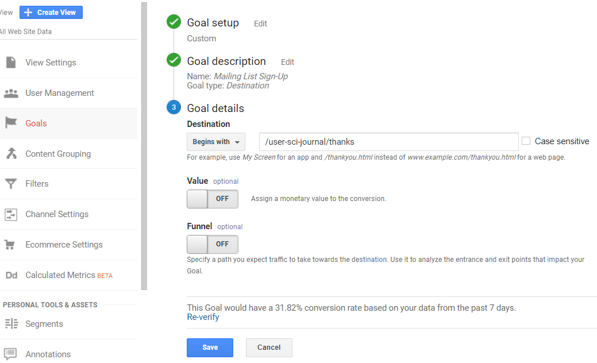
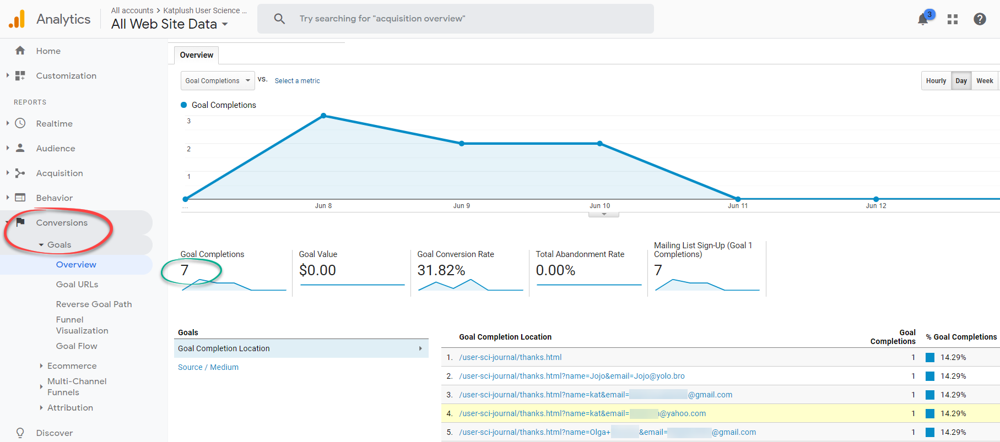

Once I had set up my Google Analytics account and got my self comfortable with it, it was time to add some goal tracking. I decided I would add a Mailing List sign up button and form as well as create PDFs of my posts and incorporate a link to allow visitors to easily download my sage observations.
To do both of these required two different process. I found that creating the destination goal for my Mailing List sign up was a bit of an easier task so lets start there. To begin I inserted a modal sign up button onto my index.html page, which pops up a for requesting the visitors name and email and a sign-up or cancel button below that. If the visitor clicks sign-up they are taken to my thanks.html page.
The goal for this type of tracking is set up in the "Goals" section of my Google Analytics Admin page. I selected "Destination" as my goal type since on of the easiest ways to track this goal to completion would be to track if the visitor makes it to the thanks.html page. This way we know not only did they click on the Mailing List button but they actually went through with the sign-up. I set my Goal destination to "Begins with" and URL for the thanks.html page minus the domain portion of the address "/user-sci-journal/thanks".
It took about 24 hrs before I could see the data under the "Conversions" reports tab, once it did I could see exactly how many visitors made it to that thanks.html page.
The Final Frontier
Blah Blah Blah